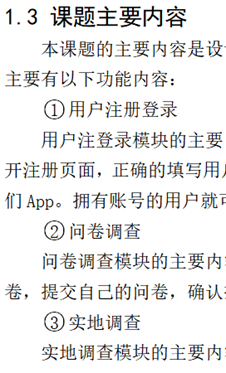

（1）为什么做这个课题，是课题背景意义的浓缩；
（2）本课题采用什么技术做了哪些工作；
（3）做的效果如何，取得了什么成果。
| 理工类： |
|---|
| 1××××（三号黑体，居中） |
| ×××× (内容用小四号宋体) |
| 1.1××××（小三号黑体，居左） |
| ××××（内容用小四号宋体） |
| 1.1.1××××（四号黑体，居左，右缩进两个字） |
| ××××（内容用小四号宋体） |
| ①××××（用与内容同样大小的宋体，右缩进两个字） |
| 1）××××（用与内容同样大小的宋体，右缩进两个字） |
| a．××××（用与内容同样大小的宋体） |
2.2系统需求
文字描述，文字描述
2.2.1硬件需求
文字描述，文字描述
（缩进2字符）XXXXXX（正文）
（缩进2字符）①XXXXXXXX
（缩进2字符）XXXXXXXXX（正文）

所有部分只首行缩进两个字符
不允许出现孤行。（页面最后一行是二级或三级标题，称为孤行）⚠️
必须包括论文总结、研究与展望两部分
关于致谢，这不仅仅是课题实施环节的致谢，而是对大学生活的致谢，需要致谢所有帮组过你的人，包括父母家人，恋人，亲朋好友，学校师生，企业指导教师（他们是第一导师），以及企业培训老师，参考文献中的作者，还有其他你认为对你学习、生活帮组过的人。
不要抄袭 🚫